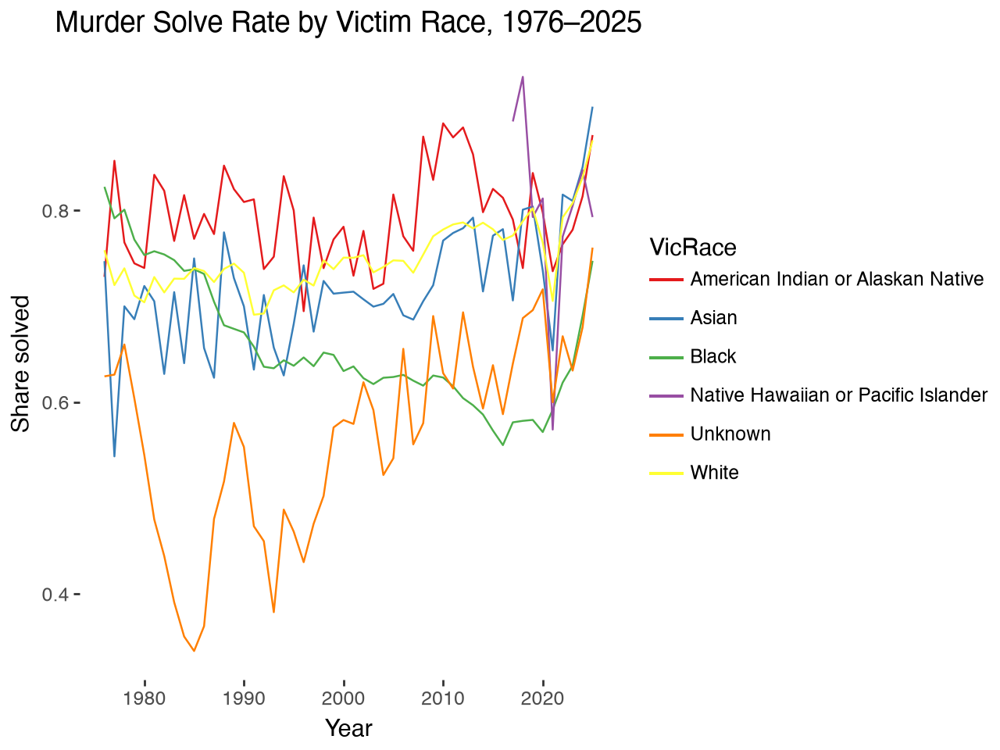
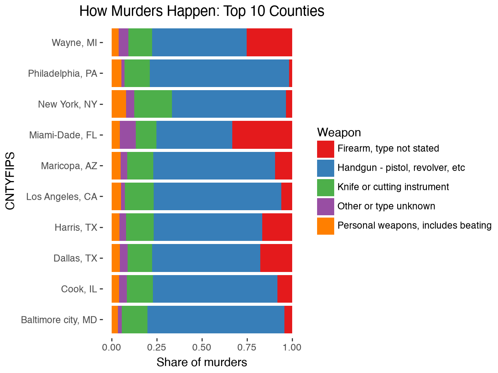

Code
import pandas as pd
import numpy as np
from plotnine import *import pandas as pd
import numpy as np
from plotnine import *The Murder Accountability Project built this file from the FBI’s homicide reports. It covers 929,433 U.S. homicides from 1976 to 2025. Each record includes the county, the victim’s details, the weapon, and whether the case was solved.
df = pd.read_csv("reports.csv")
df| ID | CNTYFIPS | Ori | State | Agency | Agentype | Source | Solved | Year | Month | ... | OffEthnic | Weapon | Relationship | Circumstance | Subcircum | VicCount | OffCount | FileDate | MSA | filter_$ | |
|---|---|---|---|---|---|---|---|---|---|---|---|---|---|---|---|---|---|---|---|---|---|
| 0 | 197609001AL00400 | Autauga, AL | AL00400 | Alabama | Autauga County | Sheriff | FBI | No | 1976 | September | ... | Unknown or not reported | Other or type unknown | Relationship not determined | Other | NaN | 0 | 0 | 30180.0 | Montgomery, AL | Not Selected |
| 1 | 197701001AL00400 | Autauga, AL | AL00400 | Alabama | Autauga County | Sheriff | FBI | Yes | 1977 | January | ... | Unknown or not reported | Other or type unknown | Acquaintance | Brawl due to influence of alcohol | NaN | 0 | 0 | 30180.0 | Montgomery, AL | Not Selected |
| 2 | 197703001AL00400 | Autauga, AL | AL00400 | Alabama | Autauga County | Sheriff | FBI | Yes | 1977 | March | ... | Unknown or not reported | Handgun - pistol, revolver, etc | Acquaintance | Other arguments | NaN | 0 | 1 | 30180.0 | Montgomery, AL | Not Selected |
| 3 | 197703001AL00401 | Autauga, AL | AL00401 | Alabama | Prattville | Municipal police | FBI | Yes | 1977 | March | ... | Unknown or not reported | Shotgun | Husband | Other arguments | NaN | 0 | 0 | 30180.0 | Montgomery, AL | Not Selected |
| 4 | 197708001AL00400 | Autauga, AL | AL00400 | Alabama | Autauga County | Sheriff | FBI | Yes | 1977 | August | ... | Unknown or not reported | Knife or cutting instrument | Acquaintance | Circumstances undetermined | NaN | 0 | 0 | 30180.0 | Montgomery, AL | Not Selected |
| ... | ... | ... | ... | ... | ... | ... | ... | ... | ... | ... | ... | ... | ... | ... | ... | ... | ... | ... | ... | ... | ... |
| 929428 | 198701001WY02300 | Weston, WY | WY02300 | Wyoming | Weston County | Sheriff | FBI | Yes | 1987 | January | ... | Unknown or not reported | Asphyxiation - includes death by gas | Son | All other manslaughter by negligence | NaN | 0 | 0 | 61987.0 | Rural Wyoming | Not Selected |
| 929429 | 199412001WY02300 | Weston, WY | WY02300 | Wyoming | Weston County | Sheriff | FBI | Yes | 1994 | December | ... | Unknown or not reported | Other or type unknown | Acquaintance | All other manslaughter by negligence | NaN | 0 | 0 | 22795.0 | Rural Wyoming | Not Selected |
| 929430 | 200405001WY02300 | Weston, WY | WY02300 | Wyoming | Weston County | Sheriff | FBI | Yes | 2004 | May | ... | Unknown or not reported | Other or type unknown | Girlfriend | Other arguments | NaN | 0 | 0 | 90704.0 | Rural Wyoming | Not Selected |
| 929431 | 201106001WY02301 | Weston, WY | WY02301 | Wyoming | Newcastle | Municipal police | FBI | No | 2011 | June | ... | Unknown or not reported | Handgun - pistol, revolver, etc | Relationship not determined | Circumstances undetermined | NaN | 0 | 0 | 81711.0 | Rural Wyoming | Not Selected |
| 929432 | 202107001WY02300 | Weston, WY | WY02300 | Wyoming | Weston County | Sheriff | FBI | Yes | 2021 | July | ... | Not of Hispanic origin | Handgun - pistol, revolver, etc | Neighbor | Other arguments | NaN | 0 | 0 | 50321.0 | Rural Wyoming | Not Selected |
929433 rows × 31 columns
df.shape(929433, 31)Before choosing features, I had to sort out which columns are known when a murder happens and which are only filled in after it’s solved.
df.columnsIndex(['ID', 'CNTYFIPS', 'Ori', 'State', 'Agency', 'Agentype', 'Source',
'Solved', 'Year', 'Month', 'Incident', 'ActionType', 'Homicide',
'Situation', 'VicAge', 'VicSex', 'VicRace', 'VicEthnic', 'OffAge',
'OffSex', 'OffRace', 'OffEthnic', 'Weapon', 'Relationship',
'Circumstance', 'Subcircum', 'VicCount', 'OffCount', 'FileDate', 'MSA',
'filter_$'],
dtype='str')Offender details, relationship, and circumstance are only known after a case is solved. If I kept them, the model would “predict” solved cases by seeing who did it.
df = df.drop(columns=['OffAge', 'OffSex', 'OffRace', 'OffEthnic', 'filter_$','Situation', 'Relationship', 'Circumstance', 'Subcircum', 'OffCount'])
df.info()<class 'pandas.DataFrame'>
RangeIndex: 929433 entries, 0 to 929432
Data columns (total 21 columns):
# Column Non-Null Count Dtype
--- ------ -------------- -----
0 ID 929433 non-null str
1 CNTYFIPS 929433 non-null str
2 Ori 929433 non-null str
3 State 929433 non-null str
4 Agency 929433 non-null str
5 Agentype 929433 non-null str
6 Source 929433 non-null str
7 Solved 929433 non-null str
8 Year 929433 non-null int64
9 Month 929433 non-null str
10 Incident 929433 non-null int64
11 ActionType 929433 non-null str
12 Homicide 929433 non-null str
13 VicAge 929433 non-null int64
14 VicSex 929433 non-null str
15 VicRace 929433 non-null str
16 VicEthnic 929433 non-null str
17 Weapon 929433 non-null str
18 VicCount 929433 non-null int64
19 FileDate 904562 non-null float64
20 MSA 929433 non-null str
dtypes: float64(1), int64(4), str(16)
memory usage: 148.9 MBfor col in df.columns:
print(df[col].value_counts().head(10))ID
197702001NY05904 13
201405001CA04200 12
199204001FL05003 12
199310004CA01942 11
202301001CA01948 11
201512004CA03610 11
201811001CA05607 11
199504006OK05506 11
199504007OK05506 11
199504008OK05506 11
Name: count, dtype: int64
CNTYFIPS
Los Angeles, CA 56892
New York, NY 48463
Cook, IL 33372
Wayne, MI 25339
Harris, TX 24077
Philadelphia, PA 18455
Dallas, TX 15471
Baltimore city, MD 13419
Miami-Dade, FL 12575
Maricopa, AZ 12408
Name: count, dtype: int64
Ori
NY03030 48446
ILCPD00 31316
CA01942 29789
MI82349 22663
TXHPD00 18724
PAPEP00 18436
MDBPD00 13293
TXDPD00 12847
LANPD00 9928
DCMPD00 9867
Name: count, dtype: int64
State
California 133305
Texas 89997
New York 63761
Florida 52019
Illinois 40626
Michigan 39834
Pennsylvania 35676
Georgia 31102
North Carolina 31074
Ohio 29393
Name: count, dtype: int64
Agency
New York 48446
Chicago 31316
Los Angeles 29789
Detroit 22663
Houston 18728
Philadelphia 18450
Baltimore 13293
Dallas 12898
Washington 10029
New Orleans 9928
Name: count, dtype: int64
Agentype
Municipal police 718087
Sheriff 156996
County police 26957
Primary state LE 23796
Special police 2029
Tribal 776
Regional police 401
Primary federal LE 391
Name: count, dtype: int64
Source
FBI 890515
MAP 38918
Name: count, dtype: int64
Solved
Yes 657639
No 271794
Name: count, dtype: int64
Year
1993 24337
1992 23793
2021 23699
1994 23246
1980 23092
2020 22700
1991 22657
2022 21740
1979 21698
1990 21246
Name: count, dtype: int64
Month
July 85708
August 83650
December 79102
June 78894
September 78760
May 78686
October 78437
January 76746
March 74521
April 74429
Name: count, dtype: int64
Incident
1 380382
2 100315
3 55467
4 38516
5 29442
6 23605
7 19528
8 16573
9 14260
10 12510
Name: count, dtype: int64
ActionType
Normal update 778715
Adjustment 150718
Name: count, dtype: int64
Homicide
Murder and non-negligent manslaughter 905648
Manslaughter by negligence 23785
Name: count, dtype: int64
VicAge
22 32095
25 32006
21 31862
20 31683
23 31548
24 30761
19 30719
26 29116
27 27957
30 27169
Name: count, dtype: int64
VicSex
Male 719732
Female 207852
Unknown 1849
Name: count, dtype: int64
VicRace
White 452052
Black 443702
Asian 13362
Unknown 12009
American Indian or Alaskan Native 7950
Native Hawaiian or Pacific Islander 358
Name: count, dtype: int64
VicEthnic
Unknown or not reported 510962
Not of Hispanic origin 315178
Hispanic origin 103293
Name: count, dtype: int64
Weapon
Handgun - pistol, revolver, etc 442140
Knife or cutting instrument 128046
Firearm, type not stated 101533
Other or type unknown 56213
Personal weapons, includes beating 50902
Shotgun 40226
Blunt object - hammer, club, etc 37841
Rifle 33343
Strangulation - hanging 10165
Fire 8388
Name: count, dtype: int64
VicCount
0 846875
1 60246
2 13187
3 4720
4 1778
5 830
9 480
6 456
7 296
10 275
Name: count, dtype: int64
FileDate
30180.0 77684
81723.0 28523
92324.0 20458
93019.0 15563
43020.0 15505
81525.0 9983
70618.0 6701
30101.0 6375
11818.0 4714
11017.0 4412
Name: count, dtype: int64
MSA
New York-New Jersey-Long Island, NY-NJ 66232
Los Angeles-Long Beach, CA 61770
Chicago-Naperville-Joliet, IL-IN-WI 39690
Detroit-Warren-Livonia, MI 28237
Houston-Sugar Land-Baytown, TX 27928
Philadelphia-Camden-Wilmington, PA-NJ-DE 26137
Dallas-Fort Worth-Arlington, TX 24064
Miami-Fort Lauderdale, FL 20467
Washington-Arlington-Alexandria, DC-VA-MD-WV 19513
Atlanta-Sandy Springs-Marietta, GA 17983
Name: count, dtype: int64I counted how many values in each column are “Unknown.”
(df == "Unknown").sum()ID 0
CNTYFIPS 0
Ori 0
State 0
Agency 1
Agentype 0
Source 0
Solved 0
Year 0
Month 0
Incident 0
ActionType 0
Homicide 0
VicAge 0
VicSex 1849
VicRace 12009
VicEthnic 0
Weapon 0
VicCount 0
FileDate 0
MSA 0
dtype: int64I didn’t drop unknown race or sex, since the missing information itself might affect whether a case gets solved.
The question is whether a murder gets solved, so this is my outcome.
df['Solved'].value_counts()
df['solved'] = (df['Solved']=='Yes').astype(int)
df['solved'].value_counts()solved
1 657639
0 271794
Name: count, dtype: int64About 71% of murders are solved.
I checked the highest victim ages.
df['VicAge'].value_counts().sort_index().tail()VicAge
96 67
97 69
98 43
99 180
999 13577
Name: count, dtype: int64999 is a code for “unknown,” not a real age. Left in, it would look like a 999-year-old victim and throw off the model.
df['VicAge'] = df['VicAge'].replace([998, 999], np.nan)I checked whether any incident ID shows up more than once.
df[df['ID'].duplicated(keep=False)].sort_values('ID').head(20)| ID | CNTYFIPS | Ori | State | Agency | Agentype | Source | Solved | Year | Month | ... | Homicide | VicAge | VicSex | VicRace | VicEthnic | Weapon | VicCount | FileDate | MSA | solved | |
|---|---|---|---|---|---|---|---|---|---|---|---|---|---|---|---|---|---|---|---|---|---|
| 72375 | 197601001CA01933 | Los Angeles, CA | CA01933 | California | Inglewood | Municipal police | FBI | No | 1976 | January | ... | Murder and non-negligent manslaughter | 16.0 | Male | Black | Unknown or not reported | Firearm, type not stated | 1 | 30180.0 | Los Angeles-Long Beach, CA | 0 |
| 72376 | 197601001CA01933 | Los Angeles, CA | CA01933 | California | Inglewood | Municipal police | FBI | No | 1976 | January | ... | Murder and non-negligent manslaughter | 25.0 | Male | Black | Unknown or not reported | Firearm, type not stated | 1 | 30180.0 | Los Angeles-Long Beach, CA | 0 |
| 72383 | 197601001CA01975 | Los Angeles, CA | CA01975 | California | West Covina | Municipal police | FBI | No | 1976 | January | ... | Murder and non-negligent manslaughter | 42.0 | Female | White | Unknown or not reported | Knife or cutting instrument | 1 | 30180.0 | Los Angeles-Long Beach, CA | 0 |
| 72384 | 197601001CA01975 | Los Angeles, CA | CA01975 | California | West Covina | Municipal police | FBI | No | 1976 | January | ... | Murder and non-negligent manslaughter | 68.0 | Male | White | Unknown or not reported | Knife or cutting instrument | 1 | 30180.0 | Los Angeles-Long Beach, CA | 0 |
| 131176 | 197601001CA02706 | Monterey, CA | CA02706 | California | Monterey | Municipal police | FBI | Yes | 1976 | January | ... | Murder and non-negligent manslaughter | 42.0 | Female | Asian | Unknown or not reported | Other or type unknown | 1 | 30180.0 | Salinas, CA | 1 |
| 131175 | 197601001CA02706 | Monterey, CA | CA02706 | California | Monterey | Municipal police | FBI | Yes | 1976 | January | ... | Murder and non-negligent manslaughter | 28.0 | Female | Asian | Unknown or not reported | Other or type unknown | 1 | 30180.0 | Salinas, CA | 1 |
| 204152 | 197601001DCMPD00 | District of Columbia | DCMPD00 | District of Columbia | Washington | Municipal police | FBI | Yes | 1976 | January | ... | Murder and non-negligent manslaughter | 28.0 | Male | Black | Unknown or not reported | Handgun - pistol, revolver, etc | 1 | 30180.0 | Washington-Arlington-Alexandria, DC-VA-MD-WV | 1 |
| 204151 | 197601001DCMPD00 | District of Columbia | DCMPD00 | District of Columbia | Washington | Municipal police | FBI | Yes | 1976 | January | ... | Murder and non-negligent manslaughter | 22.0 | Male | Black | Unknown or not reported | Handgun - pistol, revolver, etc | 1 | 30180.0 | Washington-Arlington-Alexandria, DC-VA-MD-WV | 1 |
| 215426 | 197601001FL00500 | Brevard, FL | FL00500 | Florida | Brevard County | Sheriff | FBI | Yes | 1976 | January | ... | Murder and non-negligent manslaughter | 22.0 | Male | White | Unknown or not reported | Shotgun | 1 | 30180.0 | Palm Bay-Melbourne-Titusville, FL | 1 |
| 215427 | 197601001FL00500 | Brevard, FL | FL00500 | Florida | Brevard County | Sheriff | FBI | Yes | 1976 | January | ... | Murder and non-negligent manslaughter | 22.0 | Male | White | Unknown or not reported | Shotgun | 1 | 30180.0 | Palm Bay-Melbourne-Titusville, FL | 1 |
| 300302 | 197601001ID01402 | Canyon, ID | ID01402 | Idaho | Nampa | Municipal police | FBI | Yes | 1976 | January | ... | Murder and non-negligent manslaughter | 34.0 | Female | White | Unknown or not reported | Handgun - pistol, revolver, etc | 1 | 30180.0 | Boise City-Nampa, ID | 1 |
| 300303 | 197601001ID01402 | Canyon, ID | ID01402 | Idaho | Nampa | Municipal police | FBI | Yes | 1976 | January | ... | Murder and non-negligent manslaughter | 37.0 | Male | White | Unknown or not reported | Handgun - pistol, revolver, etc | 1 | 30180.0 | Boise City-Nampa, ID | 1 |
| 301793 | 197601001IL01643 | Cook, IL | IL01643 | Illinois | Harvey | Municipal police | FBI | Yes | 1976 | January | ... | Murder and non-negligent manslaughter | 77.0 | Male | White | Unknown or not reported | Knife or cutting instrument | 1 | 30180.0 | Chicago-Naperville-Joliet, IL-IN-WI | 1 |
| 301792 | 197601001IL01643 | Cook, IL | IL01643 | Illinois | Harvey | Municipal police | FBI | Yes | 1976 | January | ... | Murder and non-negligent manslaughter | 77.0 | Female | White | Unknown or not reported | Knife or cutting instrument | 1 | 30180.0 | Chicago-Naperville-Joliet, IL-IN-WI | 1 |
| 335787 | 197601001IL04501 | Kane, IL | IL04501 | Illinois | Aurora | Municipal police | FBI | Yes | 1976 | January | ... | Murder and non-negligent manslaughter | 23.0 | Female | White | Unknown or not reported | Handgun - pistol, revolver, etc | 1 | 30180.0 | Chicago-Naperville-Joliet, IL-IN-WI | 1 |
| 335786 | 197601001IL04501 | Kane, IL | IL04501 | Illinois | Aurora | Municipal police | FBI | Yes | 1976 | January | ... | Murder and non-negligent manslaughter | 23.0 | Female | White | Unknown or not reported | Handgun - pistol, revolver, etc | 1 | 30180.0 | Chicago-Naperville-Joliet, IL-IN-WI | 1 |
| 357050 | 197601001IN06100 | Parke, IN | IN06100 | Indiana | Parke County | Sheriff | FBI | Yes | 1976 | January | ... | Murder and non-negligent manslaughter | 26.0 | Female | White | Unknown or not reported | Knife or cutting instrument | 1 | 30180.0 | Rural Indiana | 1 |
| 357049 | 197601001IN06100 | Parke, IN | IN06100 | Indiana | Parke County | Sheriff | FBI | Yes | 1976 | January | ... | Murder and non-negligent manslaughter | 4.0 | Male | White | Unknown or not reported | Knife or cutting instrument | 1 | 30180.0 | Rural Indiana | 1 |
| 357052 | 197601001IN06101 | Parke, IN | IN06101 | Indiana | Rockville | Municipal police | FBI | Yes | 1976 | January | ... | Murder and non-negligent manslaughter | 26.0 | Female | White | Unknown or not reported | Knife or cutting instrument | 1 | 30180.0 | Rural Indiana | 1 |
| 357051 | 197601001IN06101 | Parke, IN | IN06101 | Indiana | Rockville | Municipal police | FBI | Yes | 1976 | January | ... | Murder and non-negligent manslaughter | 4.0 | Male | White | Unknown or not reported | Knife or cutting instrument | 1 | 30180.0 | Rural Indiana | 1 |
20 rows × 22 columns
One incident can have several victims. Each row is a different person, so I kept them all.
Accidental deaths aren’t solved or unsolved the way murders are, so they would blur the pattern I’m looking for.
df = df[df['Homicide'] != 'Manslaughter by negligence']df['Homicide'].value_counts()Homicide
Murder and non-negligent manslaughter 905648
Name: count, dtype: int64Before modeling, I wanted to see whether solve rates differ by victim race and weapon. If they do, those are worth giving the model.
top_counties = df["CNTYFIPS"].value_counts().head(10).index
top_weapons = df["Weapon"].value_counts().head(5).index
top10c = df[df["CNTYFIPS"].isin(top_counties)]
top10w = top10c[top10c["Weapon"].isin(top_weapons)]
by_year = df.groupby(["Year", "VicRace"], as_index=False)["solved"].mean()plain = theme_bw() + theme(
panel_grid_major=element_blank(),
panel_grid_minor=element_blank(),
panel_border=element_blank(),
panel_background=element_blank(),
)
(ggplot(by_year, aes(x="Year", y="solved", color='VicRace'))
+ geom_line()
+ scale_color_brewer(palette="Set1")
+ plain
+ labs(title="Murder Solve Rate by Victim Race, 1976–2025",
x="Year", y="Share solved"))
Murders of Black victims were solved more often than murders of white victims in the late 1970s, but that flipped in the 1980s and the gap kept growing after that. Since both lines move a lot over time, I kept Year as a feature so the model can account for those shifts.
(ggplot(top10w, aes(x="CNTYFIPS", fill="Weapon"))
+ geom_bar(position="fill")
+ scale_fill_brewer(type="qual", palette="Set1")
+ coord_flip()
+ plain
+ labs(title="How Murders Happen: Top 10 Counties", y="Share of murders"))
Handguns are the most common weapon in every one of these counties. Miami-Dade and Wayne County (Detroit) have a bigger share of guns coded as “Firearm, type not stated,” which tells me counties don’t all record weapons the same way.
I saved the cleaned data so the modeling notebook starts from here instead of repeating every cleaning step.
features = ['ID', 'CNTYFIPS', 'State', 'Agentype', 'Year', 'Month',
'VicAge', 'VicSex', 'VicRace', 'VicEthnic', 'Weapon', 'VicCount', 'solved']
df = df[features]
df.to_csv("clean.csv", index=False)